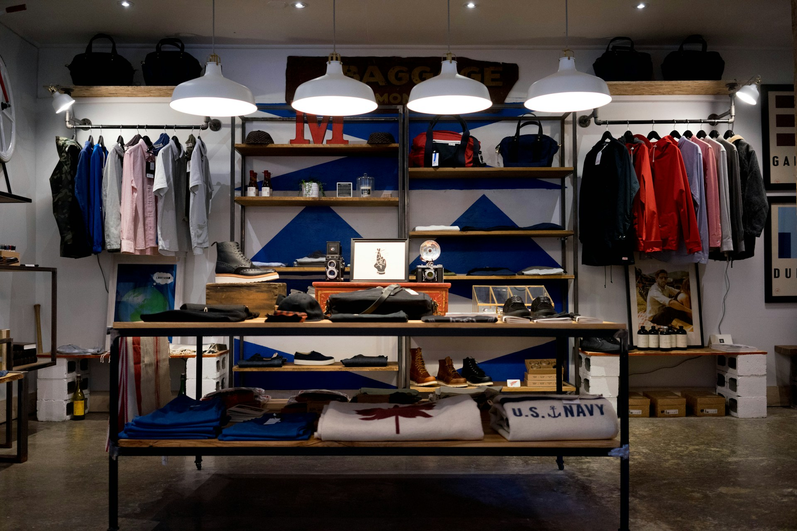
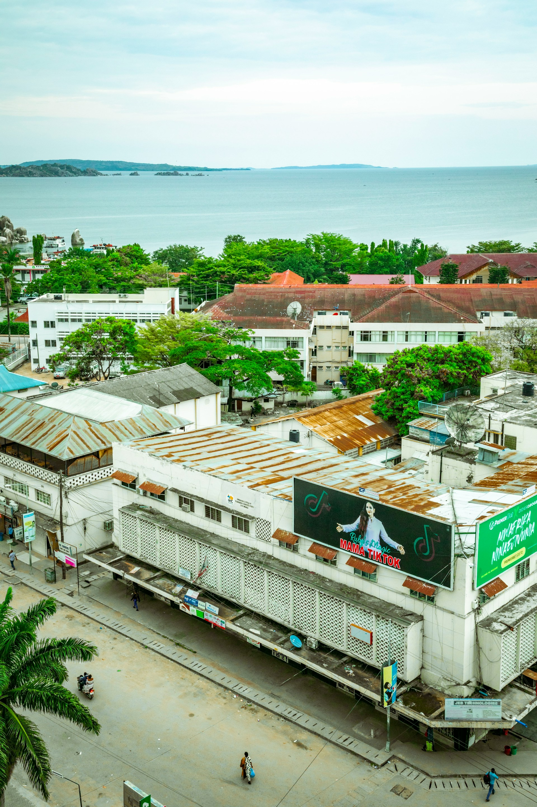
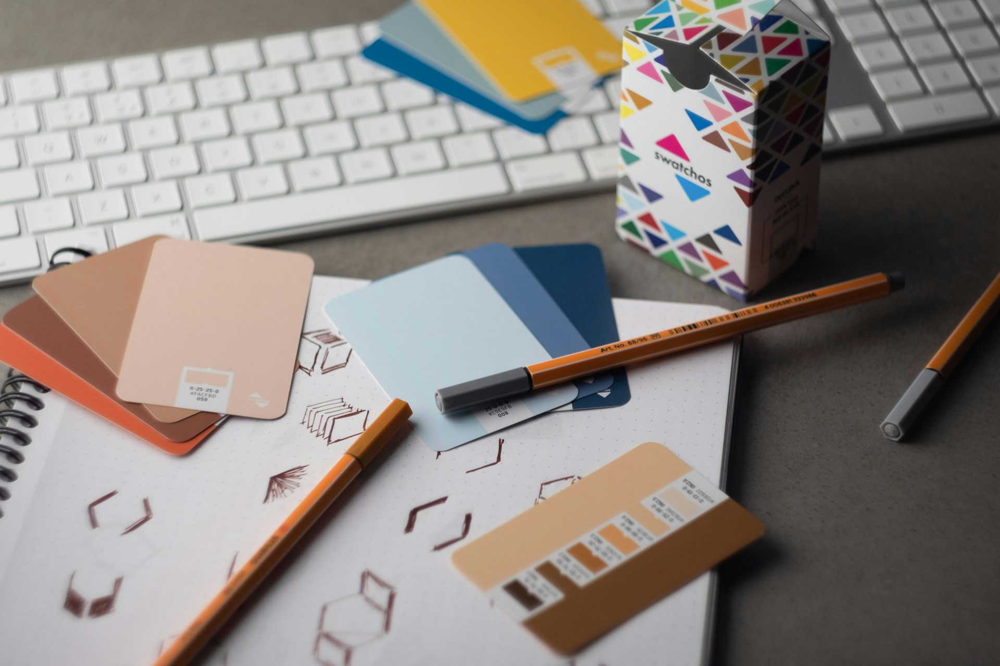
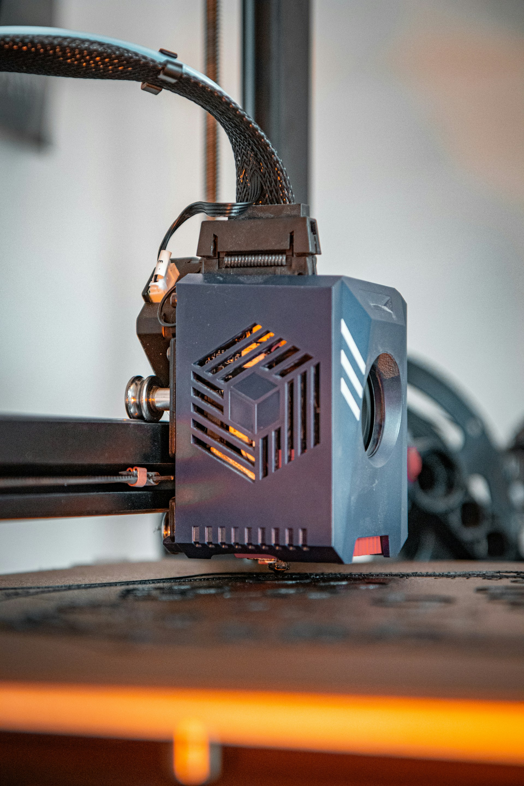
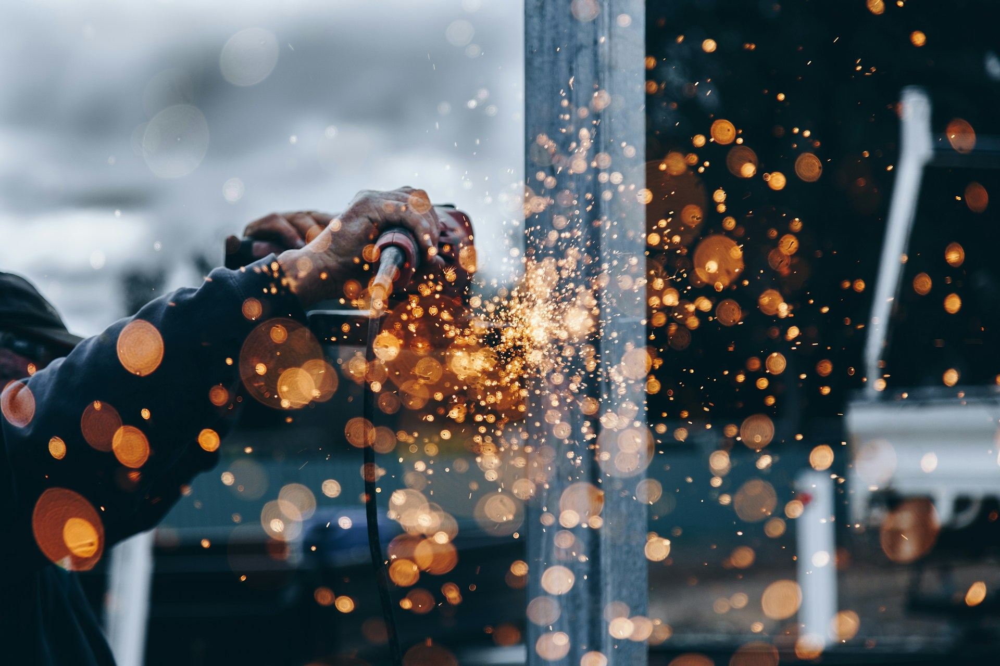
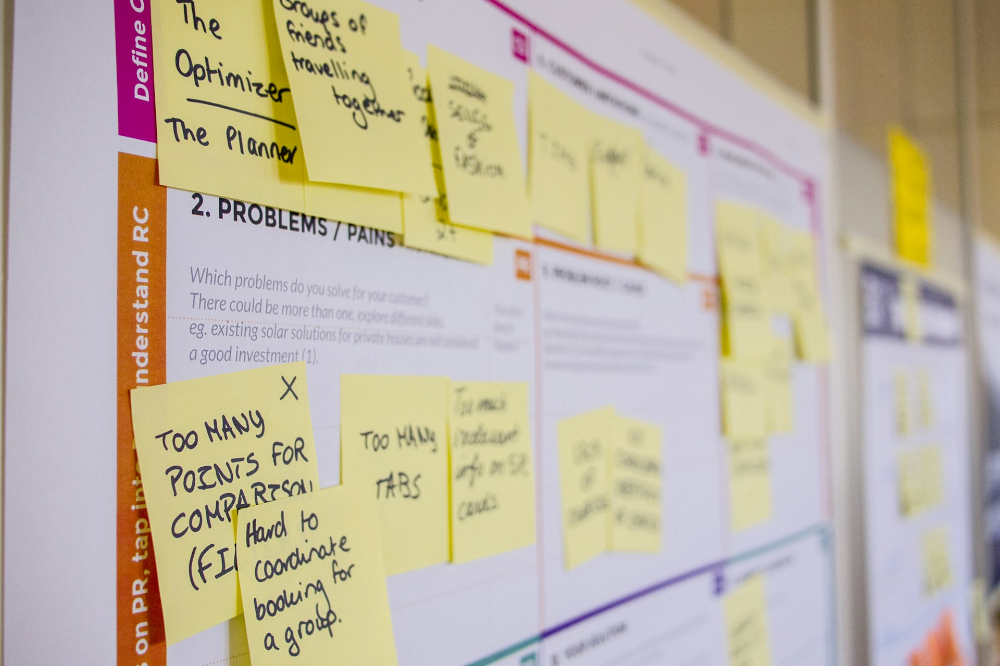

02
Installation
A collection of identities, spaces, signs, prints and experiences created for brands across Tanzania.
Some projects need to speak from across a street. Others need to quietly define an entire environment. We approach each one differently, while keeping the same attention to detail from the first idea to the finished work.

A complete visual environment designed to give a workplace a stronger sense of identity, from the walls to the smallest details.
View project



A sign can identify a place. A uniform can make a team feel like a team. A wall can change how a room feels. The best work doesn't simply occupy space — it becomes part of it.

Spaces designed around the way people move, gather, interact and remember a brand.
Visual systems that give brands a recognizable voice.
From everyday pieces to large-format visual statements.
Physical markers built to guide, identify and stand out.
Branded environments designed as complete experiences.
Custom physical structures made around the project.
Events and installations where brands take center stage.